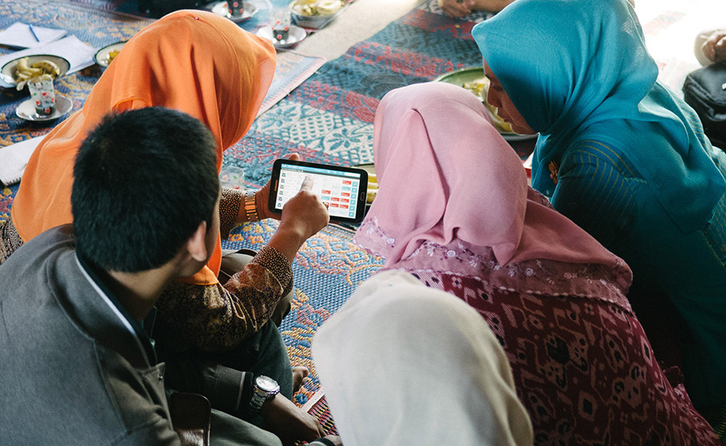

The Indonesian site of the THRIVE OpenSRP deployment will take place in the the West Nusa Tenggara (WNT) province, on the small island of Lombok in the south-eastern Indonesian archipelago. Many of the island’s approximately 3.2 million inhabitants live too far from the primary health facilities (puskesmas) where doctors and other skilled physicians are placed, limiting access to quality health care services.
To fill this gap, the Indonesian health care system employs thousands of women Frontline health workers (FHWs) including Community midwives (Bidan di desa), Community Vaccinators (Jurim) and Nutrition nurses (Gizi), and Family Planning Field Workers (PLKBs).
These FHWs are the first and often the only point of contact for health care access for millions of people and form the backbone of the health system, especially in more rural areas of Indonesia, which have a shortage of trained physicians and nurses. However, they are often inadequately trained, and have poor access to health information, tools and guidance.
In addition to Indonesia’s decentralized health system, the reliance on a paper-based health management information system (HMIS) and the divided management structure of maternal and child health services has led to overlaps in responsibilities and inefficient workflows and reporting structures in the field level, and confusion over health indicators at the national level.
To this end, OpenSRP in Indonesia aims to streamline data collection and reporting processes, improve communication between different workers, and provide continued skills development and training for FHWs. We believe this will increase overall motivation of the FHWs to manage and track their clients appropriately and provide more timely service delivery as well as reliable national health indicators. For the first time, OpenSRP will allow the different health workers to collaborate on patient care and collectively take responsibility for the complete care of the mother and child, not only the discrete service interventions they were supplying before.
Harvard School of Public Health is working closely with Lombok-based implementation partner, Summit Institute of Development (SID) and the Central Lombok Health Department to adapt and deploy OpenSRP tools for Lombok’s community health workers. SID has over a decade of experience deploying and researching interventions for improving maternal and child health and cognitive development. As part of this study, they also developed an verbal autopsy form which they adapted and translated the WHO Verbal Autopsy for integration into a Civil Registration and Vital Statistics (CRVS) systems in Indonesia and regionally.